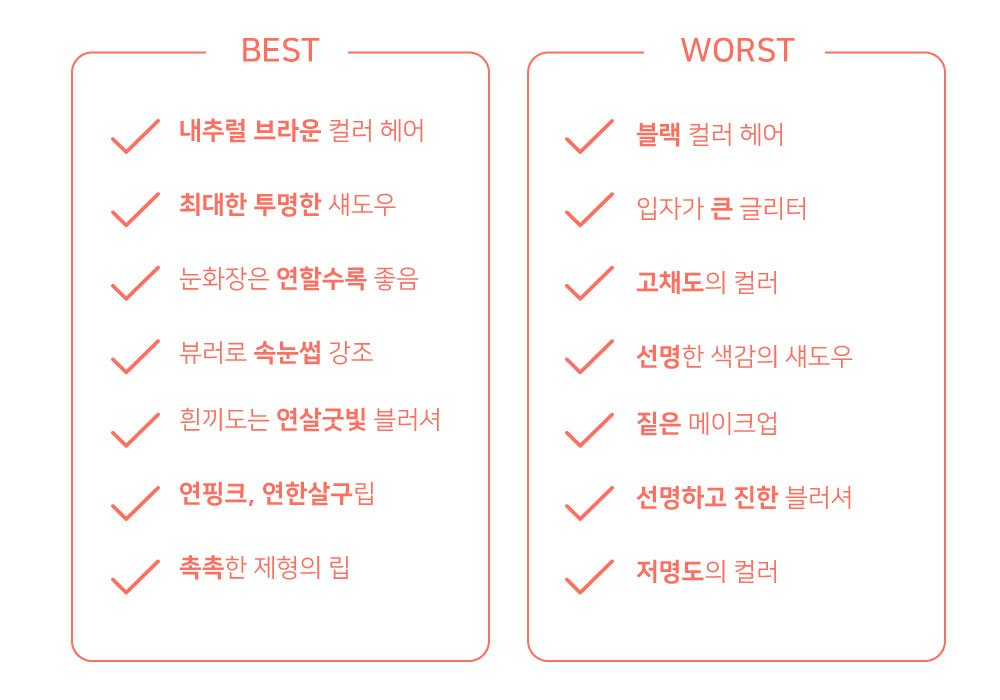
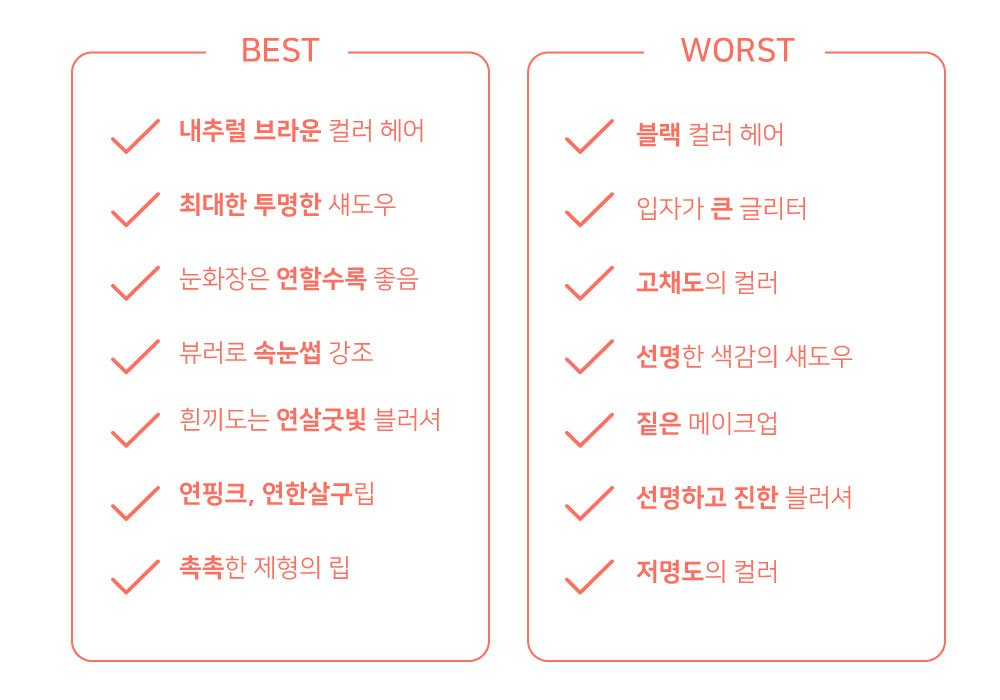

봄웜 라이트 톤의 특징이에요 봄웜 라이트!
눈화장은 최~대한! 정말 최대한 옅게 연출하는 것이 봄 라이트 톤의 특징이랍니다!
봄 웜톤들이 다들 촉촉한 제형의 립이 잘 어울리지만,
라이트 톤은 매트한 제형의 립은 어색해 보일 정도이니
제형 선택에 있어서 촉촉한 타입을 선택하는 것은 거의 필수적이라고 할 수 있답니다
색조도 최대한 페일한 컬러로,
흰끼가 많이 섞인 컬러를 선택하면 좋아요!
봄웜 하면 떠오르는
여리여리한 이미지가 딱 들어맞는답니다:)
봄웜 라이트 특징은 다음과 같습니다.

 
